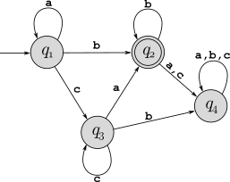

Problem 3 from Assignment 1 was really a DFA, although we didn’t use that terminology at the time. Draw out the state diagram for this DFA, where “0” is the start state and “out” is the only accept state.
Draw state diagrams for DFA that recognize the following languages:
The set of binary strings with length that is a multiple of 3.
The set of binary strings that contain two consecutive 1’s.
In the proof of Theorem 1.25 (pages 45-46), the textbook describes how to take two DFA \(M_1\) and \(M_2\) and create a new DFA that accepts \(L(M_1)\cup L(M_2)\), and the footnote on page 46 describes the trivial modification to this process to construct a DFA that accepts \(L(M_1)\cap L(M_2)\). Use this construction, along with your DFAs from parts a and b, to create a DFA that accepts the language of all binary strings that have length that is a multiple of 3 and contain two consecutive 1’s.
Consider the following NFA:
Some NFAs are also DFAs, but this one is not. Give two specific reasons this is not a DFA.
Use the NFA to DFA conversion procedure described in the book (pages 57-58) to convert this to an equivalent DFA.
For each of the following regular expressions, first give two strings that are members of the language and two that are not (so four strings for each one), and then give a succinct English description of the language.
\((\texttt{0}\cup \texttt{10})^*\)
\((((\texttt{00})^*(\texttt{11}))\cup\texttt{01})^*\)
Use the process described in the proof of Lemma 1.55 and the following Exmaple 1.56 (pages 67-68) to create an NFAs that accepts the following languages. Show each step.
\((00\cup 1)^*(00\cup 11)\).
\(011(10^*\cup\varepsilon)\)
Convert the following DFAs into regular expressions, using the process described in the book (pages 69–73). Show each step (the initial GNFA and each step of state removal).
DFA for part a:
DFA for part b:

For each language below, use the pumping lemma (page 78) to prove that it is not regular:
\(L_1=\{w\,|\, w\in\{\texttt{a},\texttt{b}\}^*\) and \(w\) has fewer \(\texttt{a}\)’s than \(\texttt{b}\)’s\(\}\)
\(L_2=\{w\,|\, w\in\{1,\#\}^*\) and \(w=x_1\#x_2\#\cdots\#x_k\) for \(k\geq 0\), each \(x_i\in 1^*\) and \(x_i\neq x_j\) for \(i\neq j\}\).
(Bonus: 5 points) Example 1.76 in the textbook showed the application the pumping lemma to show that \(\{1^{n^2}\,|\,n\geq 0\}\) is not regular. What about \(\{1^{\lfloor\sqrt{n}\rfloor}\,|\,n\geq 0\}\) (note: that’s a floor operator in the exponent) – is that regular? Give a clear and precise one sentence justification of your answer.